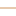
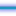

<!doctype html>
<html lang="en">
    <head>
        <meta charset="utf-8">
        <meta http-equiv="X-UA-Compatible" content="IE=edge">
        <meta name="viewport" content="initial-scale=1,user-scalable=no,maximum-scale=1,width=device-width">
        <meta name="mobile-web-app-capable" content="yes">
        <meta name="apple-mobile-web-app-capable" content="yes">
        <link rel="stylesheet" href="css/leaflet.css">
        <link rel="stylesheet" href="css/L.Control.Layers.Tree.css">
        <link rel="stylesheet" href="css/qgis2web.css">
        <link rel="stylesheet" href="css/fontawesome-all.min.css">
        <link rel="stylesheet" href="css/leaflet-search.css">
        <link rel="stylesheet" href="css/leaflet-measure.css">
        <style>
        html, body, #map {
            width: 100%;
            height: 100%;
            padding: 0;
            margin: 0;
        }
        </style>
        <title></title>
    </head>
    <body>
        <div id="map">
        </div>
        <script src="js/qgis2web_expressions.js"></script>
        <script src="js/leaflet.js"></script>
        <script src="js/L.Control.Layers.Tree.min.js"></script>
        <script src="js/multi-style-layer.js"></script>
        <script src="js/leaflet.rotatedMarker.js"></script>
        <script src="js/leaflet.pattern.js"></script>
        <script src="js/leaflet-hash.js"></script>
        <script src="js/Autolinker.min.js"></script>
        <script src="js/rbush.min.js"></script>
        <script src="js/labelgun.min.js"></script>
        <script src="js/labels.js"></script>
        <script src="js/leaflet-measure.js"></script>
        <script src="js/leaflet-search.js"></script>
        <script src="data/LimiteUAT_2.js"></script>
        <script src="data/cursuri_apa_PH_3.js"></script>
        <script src="data/eterra_4.js"></script>
        <script src="data/DrumuriJudetene_5.js"></script>
        <script src="data/TipImbracaminte_6.js"></script>
        <script>
        var map = L.map('map', {
            zoomControl:false, maxZoom:28, minZoom:1
        }).fitBounds([[44.7657498892697,26.0755474853237],[44.952444413982874,26.671929072256592]]);
        var hash = new L.Hash(map);
        map.attributionControl.setPrefix('<a href="https://github.com/tomchadwin/qgis2web" target="_blank">qgis2web</a> &middot; <a href="https://leafletjs.com" title="A JS library for interactive maps">Leaflet</a> &middot; <a href="https://qgis.org">QGIS</a>');
        var autolinker = new Autolinker({truncate: {length: 30, location: 'smart'}});
        // remove popup's row if "visible-with-data"
        function removeEmptyRowsFromPopupContent(content, feature) {
         var tempDiv = document.createElement('div');
         tempDiv.innerHTML = content;
         var rows = tempDiv.querySelectorAll('tr');
         for (var i = 0; i < rows.length; i++) {
             var td = rows[i].querySelector('td.visible-with-data');
             var key = td ? td.id : '';
             if (td && td.classList.contains('visible-with-data') && feature.properties[key] == null) {
                 rows[i].parentNode.removeChild(rows[i]);
             }
         }
         return tempDiv.innerHTML;
        }
        // add class to format popup if it contains media
		function addClassToPopupIfMedia(content, popup) {
			var tempDiv = document.createElement('div');
			tempDiv.innerHTML = content;
			if (tempDiv.querySelector('td img')) {
				popup._contentNode.classList.add('media');
					// Delay to force the redraw
					setTimeout(function() {
						popup.update();
					}, 10);
			} else {
				popup._contentNode.classList.remove('media');
			}
		}
        var zoomControl = L.control.zoom({
            position: 'topleft'
        }).addTo(map);
        var measureControl = new L.Control.Measure({
            position: 'topleft',
            primaryLengthUnit: 'meters',
            secondaryLengthUnit: 'kilometers',
            primaryAreaUnit: 'sqmeters',
            secondaryAreaUnit: 'hectares'
        });
        measureControl.addTo(map);
        document.getElementsByClassName('leaflet-control-measure-toggle')[0].innerHTML = '';
        document.getElementsByClassName('leaflet-control-measure-toggle')[0].className += ' fas fa-ruler';
        var bounds_group = new L.featureGroup([]);
        function setBounds() {
        }
        map.createPane('pane_OSMStandard_0');
        map.getPane('pane_OSMStandard_0').style.zIndex = 400;
        var layer_OSMStandard_0 = L.tileLayer('http://tile.openstreetmap.org/{z}/{x}/{y}.png', {
            pane: 'pane_OSMStandard_0',
            opacity: 1.0,
            attribution: '<a href="https://www.openstreetmap.org/copyright">© OpenStreetMap contributors, CC-BY-SA</a>',
            minZoom: 1,
            maxZoom: 28,
            minNativeZoom: 0,
            maxNativeZoom: 19
        });
        layer_OSMStandard_0;
        map.createPane('pane_GoogleSatellite_1');
        map.getPane('pane_GoogleSatellite_1').style.zIndex = 401;
        var layer_GoogleSatellite_1 = L.tileLayer('https://mt1.google.com/vt/lyrs=s&x={x}&y={y}&z={z}', {
            pane: 'pane_GoogleSatellite_1',
            opacity: 1.0,
            attribution: '',
            minZoom: 1,
            maxZoom: 28,
            maxNativeZoom: 40
        });
        layer_GoogleSatellite_1;
        map.addLayer(layer_GoogleSatellite_1);
        function pop_LimiteUAT_2(feature, layer) {
            var popupContent = '<table>\
                    <tr>\
                        <th scope="row">NAME</th>\
                        <td>' + (feature.properties['NAME'] !== null ? autolinker.link(feature.properties['NAME'].toLocaleString()) : '') + '</td>\
                    </tr>\
                    <tr>\
                        <th scope="row">tip_localitate</th>\
                        <td>' + (feature.properties['tip_localitate'] !== null ? autolinker.link(feature.properties['tip_localitate'].toLocaleString()) : '') + '</td>\
                    </tr>\
                    <tr>\
                        <th scope="row">Populatie_2021</th>\
                        <td>' + (feature.properties['Populatie_2021'] !== null ? autolinker.link(feature.properties['Populatie_2021'].toLocaleString()) : '') + '</td>\
                    </tr>\
                </table>';
            var content = removeEmptyRowsFromPopupContent(popupContent, feature);
			layer.on('popupopen', function(e) {
				addClassToPopupIfMedia(content, e.popup);
			});
			layer.bindPopup(content, { maxHeight: 400 });
        }

        function style_LimiteUAT_2_0() {
            return {
                pane: 'pane_LimiteUAT_2',
                opacity: 1,
                color: 'rgba(245,27,187,1.0)',
                dashArray: '',
                lineCap: 'butt',
                lineJoin: 'miter',
                weight: 8.0, 
                fill: true,
                fillOpacity: 1,
                fillColor: 'rgba(243,166,178,0.0)',
                interactive: true,
            }
        }
        map.createPane('pane_LimiteUAT_2');
        map.getPane('pane_LimiteUAT_2').style.zIndex = 402;
        map.getPane('pane_LimiteUAT_2').style['mix-blend-mode'] = 'normal';
        var layer_LimiteUAT_2 = new L.geoJson(json_LimiteUAT_2, {
            attribution: '',
            interactive: true,
            dataVar: 'json_LimiteUAT_2',
            layerName: 'layer_LimiteUAT_2',
            pane: 'pane_LimiteUAT_2',
            onEachFeature: pop_LimiteUAT_2,
            style: style_LimiteUAT_2_0,
        });
        bounds_group.addLayer(layer_LimiteUAT_2);
        map.addLayer(layer_LimiteUAT_2);
        function pop_cursuri_apa_PH_3(feature, layer) {
            var popupContent = '<table>\
                    <tr>\
                        <th scope="row">Denumire</th>\
                        <td>' + (feature.properties['Denumire'] !== null ? autolinker.link(feature.properties['Denumire'].toLocaleString()) : '') + '</td>\
                    </tr>\
                </table>';
            var content = removeEmptyRowsFromPopupContent(popupContent, feature);
			layer.on('popupopen', function(e) {
				addClassToPopupIfMedia(content, e.popup);
			});
			layer.bindPopup(content, { maxHeight: 400 });
        }

        function style_cursuri_apa_PH_3_0() {
            return {
                pane: 'pane_cursuri_apa_PH_3',
                opacity: 1,
                color: 'rgba(37,172,219,1.0)',
                dashArray: '',
                lineCap: 'round',
                lineJoin: 'round',
                weight: 3.0,
                fillOpacity: 0,
                interactive: false,
            }
        }
        map.createPane('pane_cursuri_apa_PH_3');
        map.getPane('pane_cursuri_apa_PH_3').style.zIndex = 403;
        map.getPane('pane_cursuri_apa_PH_3').style['mix-blend-mode'] = 'normal';
        var layer_cursuri_apa_PH_3 = new L.geoJson(json_cursuri_apa_PH_3, {
            attribution: '',
            interactive: false,
            dataVar: 'json_cursuri_apa_PH_3',
            layerName: 'layer_cursuri_apa_PH_3',
            pane: 'pane_cursuri_apa_PH_3',
            onEachFeature: pop_cursuri_apa_PH_3,
            style: style_cursuri_apa_PH_3_0,
        });
        bounds_group.addLayer(layer_cursuri_apa_PH_3);
        function pop_eterra_4(feature, layer) {
            var popupContent = '<table>\
                    <tr>\
                        <th scope="row">Nr. cadastral</th>\
                        <td>' + (feature.properties['Nr_cad'] !== null ? autolinker.link(feature.properties['Nr_cad'].toLocaleString()) : '') + '</td>\
                    </tr>\
                    <tr>\
                        <th scope="row">Indicativ DJ</th>\
                        <td>' + (feature.properties['Indicativ_DJ'] !== null ? autolinker.link(feature.properties['Indicativ_DJ'].toLocaleString()) : '') + '</td>\
                    </tr>\
                    <tr>\
                        <th scope="row">UAT</th>\
                        <td>' + (feature.properties['UAT'] !== null ? autolinker.link(feature.properties['UAT'].toLocaleString()) : '') + '</td>\
                    </tr>\
                    <tr>\
                        <th scope="row">Proprietar</th>\
                        <td>' + (feature.properties['Proprietar'] !== null ? autolinker.link(feature.properties['Proprietar'].toLocaleString()) : '') + '</td>\
                    </tr>\
                    <tr>\
                        <th scope="row">Administrator</th>\
                        <td>' + (feature.properties['Administrator'] !== null ? autolinker.link(feature.properties['Administrator'].toLocaleString()) : '') + '</td>\
                    </tr>\
                    <tr>\
                        <th scope="row">Sarcini</th>\
                        <td>' + (feature.properties['Sarcini'] !== null ? autolinker.link(feature.properties['Sarcini'].toLocaleString()) : '') + '</td>\
                    </tr>\
                    <tr>\
                        <th scope="row">km început</th>\
                        <td class="visible-with-data" id="km_inceput">' + (feature.properties['km_inceput'] !== null ? autolinker.link(feature.properties['km_inceput'].toLocaleString()) : '') + '</td>\
                    </tr>\
                    <tr>\
                        <th scope="row">km final</th>\
                        <td>' + (feature.properties['km_final'] !== null ? autolinker.link(feature.properties['km_final'].toLocaleString()) : '') + '</td>\
                    </tr>\
                </table>';
            var content = removeEmptyRowsFromPopupContent(popupContent, feature);
			layer.on('popupopen', function(e) {
				addClassToPopupIfMedia(content, e.popup);
			});
			layer.bindPopup(content, { maxHeight: 400 });
        }
        function style_eterra_4_0(feature) {
            var context = {
                feature: feature,
                variables: {}
            };
            // Start of if blocks and style check logic
            if (exp_eterra_4rule1_eval_expression(context)) {
                  return {
                pane: 'pane_eterra_4',
                opacity: 1,
                color: 'rgba(29,17,14,1.0)',
                dashArray: '',
                lineCap: 'butt',
                lineJoin: 'miter',
                weight: 4.0, 
                fill: true,
                fillOpacity: 1,
                fillColor: 'rgba(31,233,233,1.0)',
                interactive: true,
            };
                }
            else {
                return {
                pane: 'pane_eterra_4',
                opacity: 1,
                color: 'rgba(255,166,1,1.0)',
                dashArray: '',
                lineCap: 'butt',
                lineJoin: 'miter',
                weight: 11.0, 
                fill: true,
                fillOpacity: 1,
                fillColor: 'rgba(255,208,0,1.0)',
                interactive: true,
            };
            }
        }
        map.createPane('pane_eterra_4');
        map.getPane('pane_eterra_4').style.zIndex = 404;
        map.getPane('pane_eterra_4').style['mix-blend-mode'] = 'normal';
        var layer_eterra_4 = new L.geoJson(json_eterra_4, {
            attribution: '',
            interactive: true,
            dataVar: 'json_eterra_4',
            layerName: 'layer_eterra_4',
            pane: 'pane_eterra_4',
            onEachFeature: pop_eterra_4,
            style: style_eterra_4_0,
        });
        bounds_group.addLayer(layer_eterra_4);
        map.addLayer(layer_eterra_4);
        function pop_DrumuriJudetene_5(feature, layer) {
            var popupContent = '<table>\
                    <tr>\
                        <th scope="row">Categorie drum</th>\
                        <td>' + (feature.properties['Categorie'] !== null ? autolinker.link(feature.properties['Categorie'].toLocaleString()) : '') + '</td>\
                    </tr>\
                    <tr>\
                        <th scope="row">Indicativ drum</th>\
                        <td>' + (feature.properties['Numar'] !== null ? autolinker.link(feature.properties['Numar'].toLocaleString()) : '') + '</td>\
                    </tr>\
                    <tr>\
                        <th scope="row">Km început</th>\
                        <td>' + (feature.properties['km_început'] !== null ? autolinker.link(feature.properties['km_început'].toLocaleString()) : '') + '</td>\
                    </tr>\
                    <tr>\
                        <th scope="row">Km final</th>\
                        <td>' + (feature.properties['km_final'] !== null ? autolinker.link(feature.properties['km_final'].toLocaleString()) : '') + '</td>\
                    </tr>\
                    <tr>\
                        <th scope="row">Lungime HG 540/2000</th>\
                        <td>' + (feature.properties['KM HG'] !== null ? autolinker.link(feature.properties['KM HG'].toLocaleString()) : '') + '</td>\
                    </tr>\
                    <tr>\
                        <th scope="row">Lungime viabilitate</th>\
                        <td>' + (feature.properties['lungime_viabilitate'] !== null ? autolinker.link(feature.properties['lungime_viabilitate'].toLocaleString()) : '') + '</td>\
                    </tr>\
                    <tr>\
                        <th scope="row">Lungime [m]</th>\
                        <td>' + (feature.properties['LUN'] !== null ? autolinker.link(feature.properties['LUN'].toLocaleString()) : '') + '</td>\
                    </tr>\
                </table>';
            var content = removeEmptyRowsFromPopupContent(popupContent, feature);
			layer.on('popupopen', function(e) {
				addClassToPopupIfMedia(content, e.popup);
			});
			layer.bindPopup(content, { maxHeight: 400 });
        }

        function style_DrumuriJudetene_5_0() {
            return {
                pane: 'pane_DrumuriJudetene_5',
                opacity: 1,
                color: 'rgba(35,35,35,1.0)',
                dashArray: '',
                lineCap: 'square',
                lineJoin: 'bevel',
                weight: 1.0,
                fillOpacity: 0,
                interactive: true,
            }
        }
        function style_DrumuriJudetene_5_1() {
            return {
                pane: 'pane_DrumuriJudetene_5',
                opacity: 1,
                color: 'rgba(30,40,219,1.0)',
                dashArray: '',
                lineCap: 'square',
                lineJoin: 'bevel',
                weight: 8.0,
                fillOpacity: 0,
                interactive: true,
            }
        }
        map.createPane('pane_DrumuriJudetene_5');
        map.getPane('pane_DrumuriJudetene_5').style.zIndex = 405;
        map.getPane('pane_DrumuriJudetene_5').style['mix-blend-mode'] = 'normal';
        var layer_DrumuriJudetene_5 = new L.geoJson.multiStyle(json_DrumuriJudetene_5, {
            attribution: '',
            interactive: true,
            dataVar: 'json_DrumuriJudetene_5',
            layerName: 'layer_DrumuriJudetene_5',
            pane: 'pane_DrumuriJudetene_5',
            onEachFeature: pop_DrumuriJudetene_5,
            styles: [style_DrumuriJudetene_5_0,style_DrumuriJudetene_5_1,]
        });
        bounds_group.addLayer(layer_DrumuriJudetene_5);
        map.addLayer(layer_DrumuriJudetene_5);
        function pop_TipImbracaminte_6(feature, layer) {
            var popupContent = '<table>\
                    <tr>\
                        <th scope="row">Tip îmbrăcăminte</th>\
                        <td>' + (feature.properties['Imbracaminte'] !== null ? autolinker.link(feature.properties['Imbracaminte'].toLocaleString()) : '') + '</td>\
                    </tr>\
                </table>';
            var content = removeEmptyRowsFromPopupContent(popupContent, feature);
			layer.on('popupopen', function(e) {
				addClassToPopupIfMedia(content, e.popup);
			});
			layer.bindPopup(content, { maxHeight: 400 });
        }

        function style_TipImbracaminte_6_0(feature) {
            switch(String(feature.properties['Imbracaminte'])) {
                case 'Asfalt':
                    return {
                pane: 'pane_TipImbracaminte_6',
                opacity: 1,
                color: 'rgba(116,116,116,1.0)',
                dashArray: '',
                lineCap: 'square',
                lineJoin: 'bevel',
                weight: 4.0,
                fillOpacity: 0,
                interactive: true,
            }
                    break;
                case 'Asfalt tip beton':
                    return {
                pane: 'pane_TipImbracaminte_6',
                opacity: 1,
                color: 'rgba(144,144,144,1.0)',
                dashArray: '',
                lineCap: 'square',
                lineJoin: 'bevel',
                weight: 4.0,
                fillOpacity: 0,
                interactive: true,
            }
                    break;
                case 'Beton, ciment':
                    return {
                pane: 'pane_TipImbracaminte_6',
                opacity: 1,
                color: 'rgba(152,125,183,1.0)',
                dashArray: '',
                lineCap: 'square',
                lineJoin: 'bevel',
                weight: 4.0,
                fillOpacity: 0,
                interactive: true,
            }
                    break;
                case 'Împietruit':
                    return {
                pane: 'pane_TipImbracaminte_6',
                opacity: 1,
                color: 'rgba(37,172,219,1.0)',
                dashArray: '',
                lineCap: 'square',
                lineJoin: 'bevel',
                weight: 4.0,
                fillOpacity: 0,
                interactive: true,
            }
                    break;
                case 'Pământ':
                    return {
                pane: 'pane_TipImbracaminte_6',
                opacity: 1,
                color: 'rgba(174,113,0,1.0)',
                dashArray: '',
                lineCap: 'square',
                lineJoin: 'bevel',
                weight: 4.0,
                fillOpacity: 0,
                interactive: true,
            }
                    break;
                default:
                    return {
                pane: 'pane_TipImbracaminte_6',
                opacity: 1,
                color: 'rgba(207,147,90,1.0)',
                dashArray: '',
                lineCap: 'square',
                lineJoin: 'bevel',
                weight: 1.0,
                fillOpacity: 0,
                interactive: true,
            }
                    break;
            }
        }
        map.createPane('pane_TipImbracaminte_6');
        map.getPane('pane_TipImbracaminte_6').style.zIndex = 406;
        map.getPane('pane_TipImbracaminte_6').style['mix-blend-mode'] = 'normal';
        var layer_TipImbracaminte_6 = new L.geoJson(json_TipImbracaminte_6, {
            attribution: '',
            interactive: true,
            dataVar: 'json_TipImbracaminte_6',
            layerName: 'layer_TipImbracaminte_6',
            pane: 'pane_TipImbracaminte_6',
            onEachFeature: pop_TipImbracaminte_6,
            style: style_TipImbracaminte_6_0,
        });
        bounds_group.addLayer(layer_TipImbracaminte_6);
        map.addLayer(layer_TipImbracaminte_6);
        var overlaysTree = [
            {label: 'Tip Imbracaminte<br /><table><tr><td style="text-align: center;"></td><td>Asfalt</td></tr><tr><td style="text-align: center;"></td><td>Asfalt tip beton</td></tr><tr><td style="text-align: center;"></td><td>Beton, ciment</td></tr><tr><td style="text-align: center;"></td><td>Împietruit</td></tr><tr><td style="text-align: center;"></td><td>Pământ</td></tr><tr><td style="text-align: center;"></td><td></td></tr></table>', layer: layer_TipImbracaminte_6},
            {label: ' Drumuri Judetene', layer: layer_DrumuriJudetene_5},
        {label: '<b>INTABULARI</b>', selectAllCheckbox: true, children: [
            {label: 'eterra<br /><table><tr><td style="text-align: center;"></td><td></td></tr><tr><td style="text-align: center;"></td><td></td></tr></table>', layer: layer_eterra_4},]},
        {label: '<b>ape</b>', selectAllCheckbox: true, children: [
            {label: ' cursuri_apa_PH', layer: layer_cursuri_apa_PH_3},]},
            {label: ' Limite UAT', layer: layer_LimiteUAT_2},
            {label: "Google Satellite", layer: layer_GoogleSatellite_1},
            {label: "OSM Standard", layer: layer_OSMStandard_0},]
        var lay = L.control.layers.tree(null, overlaysTree,{
            //namedToggle: true,
            //selectorBack: false,
            //closedSymbol: '&#8862; &#x1f5c0;',
            //openedSymbol: '&#8863; &#x1f5c1;',
            //collapseAll: 'Collapse all',
            //expandAll: 'Expand all',
            collapsed: true,
        });
        lay.addTo(map);
        setBounds();
        var i = 0;
        layer_LimiteUAT_2.eachLayer(function(layer) {
            var context = {
                feature: layer.feature,
                variables: {}
            };
            layer.bindTooltip((layer.feature.properties['NAME'] !== null?String('<div style="color: #a2009d; font-size: 10pt; font-weight: bold; font-family: \'Open Sans\', sans-serif;">' + layer.feature.properties['NAME']) + '</div>':''), {permanent: true, offset: [-0, -16], className: 'css_LimiteUAT_2'});
            labels.push(layer);
            totalMarkers += 1;
              layer.added = true;
              addLabel(layer, i);
              i++;
        });
        var i = 0;
        layer_cursuri_apa_PH_3.eachLayer(function(layer) {
            var context = {
                feature: layer.feature,
                variables: {}
            };
            layer.bindTooltip((layer.feature.properties['Denumire'] !== null?String('<div style="color: #25acdb; font-size: 10pt; font-weight: bold; font-style: italic; font-family: \'Open Sans\', sans-serif;">' + layer.feature.properties['Denumire']) + '</div>':''), {permanent: true, offset: [-0, -16], className: 'css_cursuri_apa_PH_3'});
            labels.push(layer);
            totalMarkers += 1;
              layer.added = true;
              addLabel(layer, i);
              i++;
        });
        var i = 0;
        layer_DrumuriJudetene_5.eachLayer(function(layer) {
            var context = {
                feature: layer.feature,
                variables: {}
            };
            layer.bindTooltip((layer.feature.properties['Numar'] !== null?String('<div style="color: #ffffff; font-size: 10pt; font-weight: bold; font-family: \'Open Sans\', sans-serif;">' + layer.feature.properties['Numar']) + '</div>':''), {permanent: true, offset: [-0, -16], className: 'css_DrumuriJudetene_5'});
            labels.push(layer);
            totalMarkers += 1;
              layer.added = true;
              addLabel(layer, i);
              i++;
        });
        map.addControl(new L.Control.Search({
            layer: layer_DrumuriJudetene_5,
            initial: false,
            hideMarkerOnCollapse: true,
            propertyName: 'Numar'}));
        document.getElementsByClassName('search-button')[0].className +=
         ' fa fa-binoculars';
        resetLabels([layer_LimiteUAT_2,layer_cursuri_apa_PH_3,layer_DrumuriJudetene_5]);
        map.on("zoomend", function(){
            resetLabels([layer_LimiteUAT_2,layer_cursuri_apa_PH_3,layer_DrumuriJudetene_5]);
        });
        map.on("layeradd", function(){
            resetLabels([layer_LimiteUAT_2,layer_cursuri_apa_PH_3,layer_DrumuriJudetene_5]);
        });
        map.on("layerremove", function(){
            resetLabels([layer_LimiteUAT_2,layer_cursuri_apa_PH_3,layer_DrumuriJudetene_5]);
        });
        </script>
    </body>
</html>
